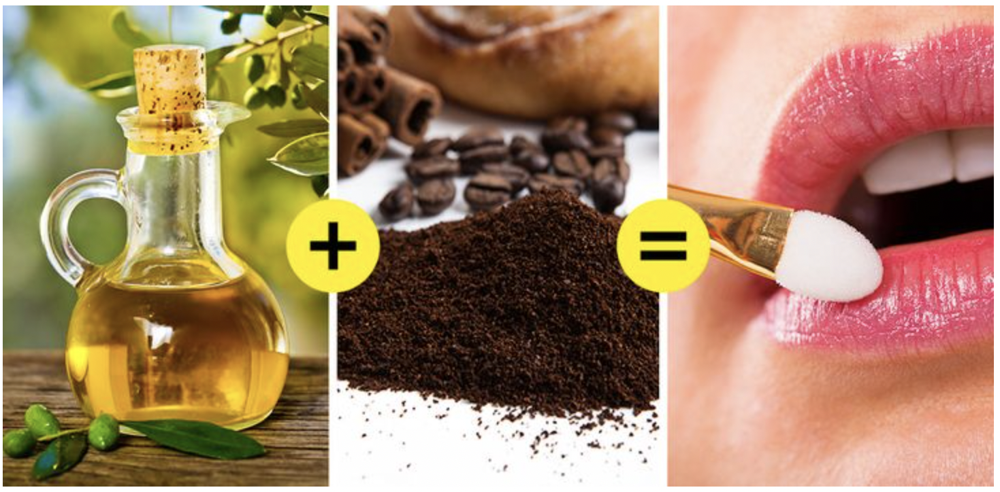

Lips are the biggest contributor to a beautiful smile, that’s why it’s necessary to keep your lips hydrated and healthy.
This can be accomplished by drinking enough water, using a lip balm daily, and removing dry skin.
The good thing is that you can make a simple and cheap scrub at home.
You will need:
- 1 tsp of ground coffee (25 g)
- 2 tsp of olive oil (50 g)
How to prepare:
Mix both ingredients in a cup or bowl until combined. You should get a firm paste.
How to use:
Apply the scrub to your lips and use your finger to gently massage the scrub in circular motions.
Use at least 3 times a week.
Rinse with water and then apply your favorite moisturizing balm.